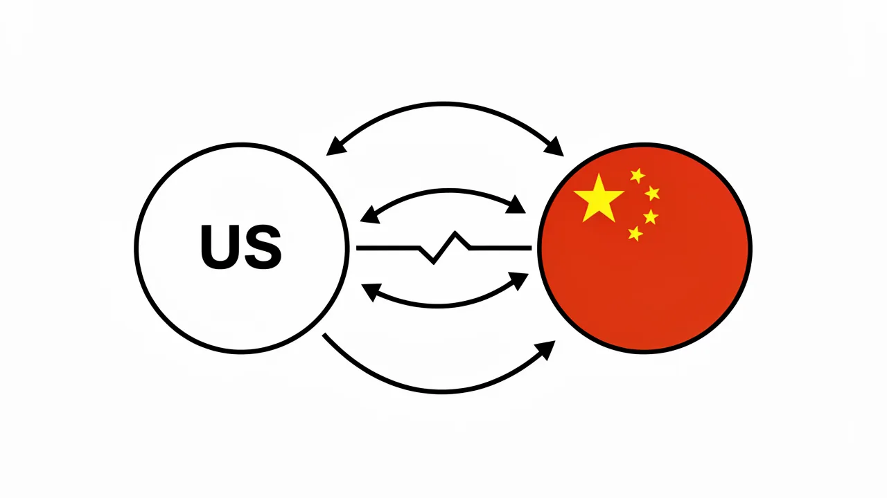

美国人工智能安全预警倡议可能导致外交孤立和全球情报信息缺失。
对美国近期提出的关于人工智能安全通知的方案进行分析，该方案将技术专家排除在决策过程之外，这可能会损害与中国的国际合作。

注册一个免费的 DeepSage 账户，以便保存文章、跟踪测试结果，并第一时间获取每日简报。
- US safety proposals risk excluding the technical experts essential for risk detection.
- A lack of expert involvement may lead to a breakdown in US-China safety communication.
- Safety protocols viewed as strategic tools may increase global AI opacity.
- The decoupling of AI governance threatens global management of borderless AI risks.
目前，美国正朝着构建人工智能安全预警框架的方向发展，该框架优先考虑单方面国家通报，而非多边技术共识。这一转变正值…… 人工智能军备竞赛 华盛顿和北京之间的紧张关系日益加剧，由此形成了一种战略环境，在这种环境下，人们越来越倾向于从国家安全的角度而非共同的科学风险角度来审视安全协议。主要的担忧在于，如果在这些预警机制的核心决策过程中排除技术专家，美国可能会无意中向中国发出信号，即安全问题不如战略优势更为重要。

1. 安全治理结构的变化
美国提出的框架侧重于一种机制，即当人工智能的能力达到某些“警戒线”时，及时通知相关方。然而，目前该倡议的设计强调政府监管和高级别外交渠道，而明显忽视了那些实际负责监控模型参数、计算规模和新兴行为的研究人员和工程师。
这种排斥方式导致风险识别和沟通方式出现根本性的脱节：
- 检测与声明：技术专家通过实证测试来识别风险，例如自主生物设计或先进的网络攻击能力。而仅由政府主导的框架依赖于“声明”，这容易受到政治因素的影响而延误。
- 验证缺失：如果科学界没有参与决策的机会，就缺乏一种中立的机制来验证“安全警报”是否基于技术现实，还是出于战略考虑。
- 信任缺失：如果信息共享机制被视为用于监视竞争对手的工具，那么竞争对手参与的积极性就会消失。
拟议中的美国框架将政府通报放在优先地位，而技术研究人员在识别潜在风险方面的参与则相对次要。
2. 中国面临的困境以及保持沉默的动机
中国对美国提出的这些新兴安全提案的反应，表现出明显缺乏积极参与的姿态。虽然北京在理论上表示有兴趣参与全球人工智能治理，但实际情况是…… 地缘政治竞争 有观点认为，由美国主导的安全倡议，如果排除了技术互操作性，可能会被视为一种遏制手段。

当安全协议的制定侧重于国家利益，而非共同的技术标准时，就会增加“隐性”竞争的动力。如果中国认为美国的预警系统旨在阻止中国的技术突破，而非防止全球灾难，那么中国不太可能分享那些原本应该被该系统所控制的关键情报--例如，模型中出现的意外行为或非预期的自主能力。这就会形成一个反馈循环，美国倾向于采取更加单边主义的策略，而中国则通过增加不透明度来回应。
3. 技术脱钩的风险
随着美国专注于“赢得”人工智能竞赛，技术脱钩的风险也在增加。 技术解耦 随着人工智能技术的不断发展，确保人工智能的安全至关重要。这需要我们对“具有潜在危险能力”的模型有一个共同的理解。如果美国仅从政治角度出发来界定这些标准，就有可能形成一套分裂的全球标准，即存在两套不同的“安全”规则，而这两套规则之间又无法有效沟通。
排除专家的参与可能会促使中国隐瞒重要的安全相关情报，以避免受到战略层面的监控。
这种脱钩的做法威胁到全球安全的根本。最严重的 AI 风险--例如大规模虚假信息传播或新型病原体的产生--并不受国家边界的限制。一个未能纳入全球技术社区的体系，实际上就是未能有效监控风险来源的体系。
摘要
美国提出的关于 AI 安全警报的提案，虽然旨在应对技术快速发展，但也存在显著的结构性缺陷。该提案将政府通报置于专家主导的验证之上，这可能会被中国解读为一种战略工具，而不是一种安全机制。这可能会导致关键安全情报共享中断，最终使全球局势变得更加动荡，透明度也更低。
参考资料
- 美国政策提案--分析美国政府近期提出的关于 AI 能力监控的框架。
- 全球 AI 治理趋势--概述 AI 监管领域从科学合作向地缘政治竞争转变的情况。
- Technical Decoupling
- The process of scientific and engineering communities in different nations becoming unable to collaborate due to political or security barriers.
- Emergent Behavior
- Unplanned or unexpected capabilities that appear in large-scale AI models as they are scaled up.
注册一个免费的 DeepSage 账户，以便保存文章、跟踪测试结果，并第一时间获取每日简报。